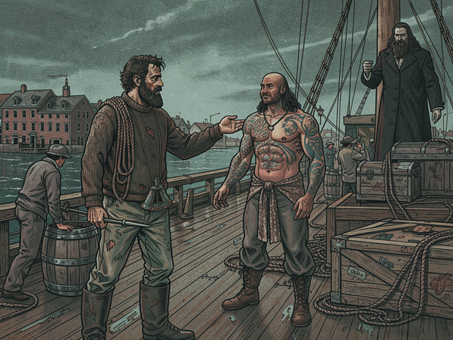

The wind in New Bedford was a knife that day, sharpened on the grit of a dying industry. It carried the scent of low tide and diesel, and beneath that—fainter, more ancient—the ghost of train oil and blubber clinging to the skeletal remains of forgotten docks. Ishmael pulled the collar of his threadbare jacket tighter. The duffel bag cut into his shoulder, the cheap plastic cassette recorder knocking against his hip with each step. This wasn't the vibrant port of history books. This was a graveyard of rust and ambition, each shuttered cannery window a vacant eye staring at nothing.
He'd taken the Greyhound from Portland, watched the highway blur into grey through rain-streaked glass. The brochure had promised a quaint New England town. The reality was closer to a forgotten corner of the Soviet bloc—concrete piers crumbling like old teeth, chain-link fences sagging under their own weight. He'd come for two things: anonymity and the sea. The first was easily found in the shadows of rotting warehouses. The second, he hoped, lay waiting at the end of Union Street.
He passed a boarded-up diner, its faded poster of a smiling family enjoying fried clams peeling away from the glass like dead skin. On the next block, a payphone booth stood like a monument to obsolescence, its receiver dangling, severed. Ishmael knew the feeling. He fumbled in his pocket for the newspaper clipping—a two-inch classified ad buried deep in the maritime section: "CREW WANTED – FACTORY SHIP. LONG TERM. EXPERIENCE OPTIONAL." No ship name. Just a return address for a chandlery down by the main pier.
The chandlery was a cluttered maze of nylon rope, grease-stained tarps, and corroded brass fittings. Dust hung thick in the air, carrying the tang of forgotten dreams. A wizened man with a perpetual squint glanced up from behind a counter drowning in old charts.
"You here about the *Pequod*?" he rasped.
Ishmael nodded, a knot forming in his stomach. The name—whispered on the docks—had an archaic weight to it.
"She's tied up at Slip 17. See the First Mate, Starbuck. Tell him the old man sent you." The chandler pointed a gnarled finger toward the docks, already dismissing him with a grunt.
Slip 17 was a world unto itself. The *Pequod* loomed—a monstrous, anachronistic hulk of welded steel and peeling paint. She wasn't a pristine research vessel, nor a sleek modern freighter. She was a dinosaur, a leviathan-hunter from another age, her superstructure patched with visible welds, her decks streaked with the ghosts of spilled oil and blood. Her massive stern ramp, designed to haul leviathans from the ocean, gaped like a hungry maw. A faint metallic hum vibrated through the pilings, a low thrum that promised constant, grueling work.
He found the gangplank—a rickety affair of painted plywood and frayed rope—and climbed aboard. The deck was chaos: crates, coiled lines, machinery shrouded in tarpaulins. The smell here was richer, more complex. Brine and old engine grease. The metallic tang of something perpetually cold. A faint, acrid whiff of ammonia. This was a working ship, no question.
A figure emerged from the engine room hatch, wiping greasy hands on a rag. Powerfully built, his skin a roadmap of intricate dark tattoos that seemed to writhe in the shifting light. His hair hung long and dark, braided with what looked like scrimshawed bone. But his eyes—deep-set and intelligent—held a quiet intensity that belied the rough exterior. He wore worn overalls, not a uniform, and a heavy, archaic-looking wrench was tucked into his belt.
"Lost?" the man rumbled, his voice surprisingly soft for his build, tinged with an accent Ishmael couldn't place.
"Looking for the First Mate. Starbuck."
The man nodded slowly. "He's up bridge, arguing with the radio. They always arguing with the radio on this ship." He extended a greasy hand. "I am Queequeg. Engineer. And sometimes, when the old man allows, harpooner."
Ishmael shook his hand. Calloused, strong, yet the grip was gentle. "Ishmael. Deckhand, I guess."
Queequeg's lips curved into a slight, knowing smile. "Deckhand, biologist, philosopher. We all wear many hats out here, Ishmael. You hear the ship breathing? She is an old woman. Needs gentle touch. Needs respect."
He gestured vaguely toward the massive engine room, source of the deep thrumming. "New blood is good. But you must ask yourself—what sound does the sea make when it swallows a man?"
He didn't wait for an answer. Just fixed Ishmael with that unnerving gaze a moment longer before disappearing back into the bowels of the ship, leaving Ishmael alone amidst the clatter and hum.
Ishmael ran a hand over the cold, rough steel of a winch, the sound of the *Pequod*'s heart beating around him. He pulled out his cassette recorder, thumbed the record button. A tiny red light glowed.
"Day one," he whispered into the microphone, his voice hoarse. "New Bedford, 1985. On board the *Pequod*. Rusting. Smells like oil and old iron. And something else... something hungry."
He found Starbuck eventually—a lean man with a perpetually worried frown etched between his eyes, shouting into a crackling VHF radio on the bridge. Starbuck took his name, grunted, pointed to a stack of moldy forms.
"Fill these out. Get your gear below. We're cutting lines at dawn."
No welcome. No handshake. Just a grim-faced urgency that pervaded the air like salt spray.
As the sun dipped below the grimy skyline, painting the clouds in bruised purples and oranges, a lone figure appeared on the bridge wing, silhouetted against the dying light. Tall, stoic, unmoving. His peg leg met the deck with a hollow sound that carried across the water. Even from a distance, Ishmael felt the oppressive weight of his presence. Captain Ahab. He wasn't looking at the crew or the dwindling dockside activity. His gaze was fixed on the churning grey expanse of open sea—an unblinking stare that seemed to pierce the horizon itself.
A heavy silence fell over the ship. The usual shouts and clatter of last-minute preparations seemed to falter, swallowed by the sheer force of the captain's will. Ishmael watched him, a shiver running down his spine that had nothing to do with the cold. This was no ordinary voyage. This was a man setting sail for a rendezvous with destiny. Or perhaps with madness.
Below deck, in the cramped, dank bunkroom, Ishmael unfolded his sleeping bag. The air was heavy with unwashed bodies and cheap tobacco. He sat on the edge of the cot, the ship's engines now a more pronounced tremor beneath his feet. He picked up his recorder again.
"Ahab," he murmured. "He's... a force. Not just a man."
He paused, listening to the creaks and groans of the old ship settling into her final embrace with the harbor.
"We're leaving. For what, I don't know. But I have a feeling it won't be anonymity."
He clicked stop. The tiny red light went out, plunging his small world back into uncertain dark. The *Pequod* shivered—a living thing eager for the open ocean.